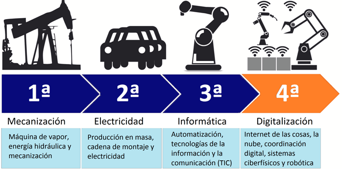
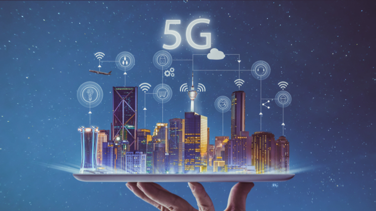
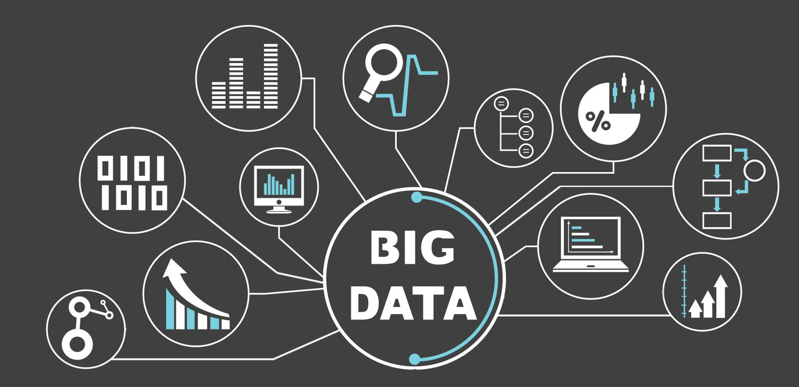
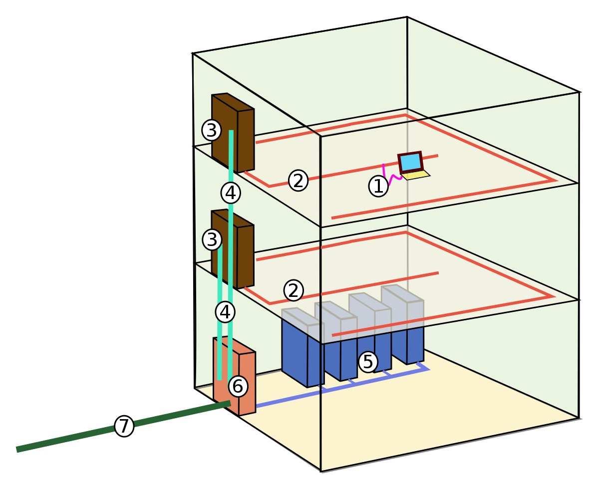
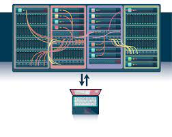

4Ta Revolución Industrial
Se le conoce a la mezcla vanguardista de diversas técnicas de producción con sistemas inteligentes que se
integra con las organizaciones y las personas, haciendo uso de los datos.
.

Ventajas
-> Producción y disponibilidad de la información
-> Conectividad
-> Procesamiento inteligente
-> Nuevos modos de producción
-> Nuevos modos de interacción
Nichos
La Inteligencia Artificial se presenta como una de las tecnologías claves en la profunda transformación
que están viviendo la economía, la sociedad y el mercado laboral.
La tecnología del Internet de las cosas, que nació para establecer una conexión entre el mundo físico y
el digital, ha revolucionado numerosos sectores.
.
los cobots, especialmente diseñados para interactuar físicamente con los humanos en entornos
colaborativos, serán claves en la industria. Entre otras cosas, optimizan la producción y alejan a los
empleados de las tareas monótonos o peligrosas.
La realidad aumentada y la realidad virtual, tecnologías que combinan el mundo real con el digital
gracias a la informática, permiten enriquecer la experiencia visual de las personas, ya sean usuarios o
consumidores, generando experiencias inmersivas.
.
Referencias
* https://www.iberdrola.com/innovacion/cuarta-revolucion-industrial
* https://www.atdsas.com/pageflip/img/2020-ATD-fischertechnik-Industria4-0.pdf
5G
Es conocida como la quinta generación de las tecnologías y estándares de comunicación inalámbrica,
ya que utilizarán los dispositivos móviles para conectarse a Internet desde cualquier lugar.
.

Ventajas
-> la velocidad (permitirá navegar hasta a 10 GBps)
-> la latencia (el tiempo de respuesta de la red)
-> El aumentar exponencialmente el número de dispositivos conectados
Nichos
Manufacturas, nuevos modelos de producción y organización basados en el intercambio de información
entre objetos conectados.
Automoción, vehículos autónomos y cooperativos. La latencia mínima permitirá la conducción automática
y, a la vez, segura.
Entretenimiento y medios, contenidos generados por los usuarios. El 75% del tráfico móvil será en formato vídeo. Mayor calidad técnica e interfaces táctiles.
.
E-Salud y M-Salud, Servicios individualizados. Centros y hospitales virtuales. Operaciones quirúrgicas
realizadas en remoto mediante robots.
Suministro energético, redes inteligentes para una distribución mucho más eficiente y sostenible en
industrias y hogares.
.
Referencias
* https://www.iberdrola.com/innovacion/que-es-5g-ventajas
* https://www.nationalgeographic.com.es/ciencia/que-es-5g-y-como-nos-cambiara-vida_14449
Big Data
Es el conjuntos de datos o combinaciones de conjuntos de datos cuyo tamaño (volumen), complejidad (variabilidad)
y velocidad de crecimiento (velocidad) dificultan su captura, gestión, procesamiento o análisis mediante
tecnologías y herramientas convencionales,
.

Volumen, Velocidad y Variedad.
Elemento de importancia
-> Acceso y Autorización Granular a Datos
-> Constante Auditoría y Análisis
-> Seguridad perimetral, protección de datos y autenticación integrada
-> Una arquitectura de datos unificada
-> Encriptación y Tokenización de Datos
Nichos
Datos de internet y móviles.
Datos de Internet de las Cosas.
Datos sectoriales recopilados por empresas especializadas.
Datos experimentales.
Tipos
Tipos de datos no estructurados: documentos, vídeos, audios, etc.
Tipos de datos semi-estructurados: software, hojas de cálculo, informes.
Tipos de datos estructurados
.
Referencias
* https://www.powerdata.es/big-data
* https://www.oracle.com/co/big-data/what-is-big-data/
Call Center
Hace referencia a una oficina de representantes, los cuales estan dedicados a recibir y recoger
un alto volumen de llamadas provenientes de consumidores y clientes potenciales.
.
Proveen información y soporte acerca de los productos y servicios.
Funciones
-> Aumentar las ventas
-> Brindar servicio al cliente personalizado
-> Optimizar los recursos
-> Retener a los clientes
Tecnología
• Conmutador
• Teléfonos
• Computadoras
• Headsets y micrófonos
• Voz sobre IP
• Bases de datos
• Automatic Call Distribution (ACD)
• Sistema de respuesta interactiva por voz (IVR)
• Grabador de llamadas
Tipos
- Contratación
- Llamadas
- De llamadas entrantes
- De llamadas salientes
- De llamadas automatizadas
.
Referencias
* https://blog.hubspot.es/service/call-center
* https://omniawfm.com/blog/call-center-que-es.php
Cableado Estructurado
Es un sistema de conectores, cables, dispositivos y canalizaciones que forman la infraestructura que
implanta una red de área local en un edificio o recinto, y su función es transportar señales desde
distintos emisores hasta los receptores correspondientes.
.

1- Cableado de área de trabajo,
2- Cableado horizontal,
3- Cableado de administración (armario de cableado, rack),
4- Cableado vertical (central, backbone),
5- Centro de cálculo,
6- Cableado de equipamiento (armario de entrada al edificio),
7- Cableado del campus (acometida, cableado entre edificios)
No se recomiendan
-> Cat 1.
-> Cat 2.
-> Cat 3.
-> Cat 4.
-> Cat 5.
-> Cat 5e.
Esta categorías de cableado, pese a seguir existiendo, no se recomiendan ya que
no son capaces de posibilitar las velocidades y anchos de banda que se requieren en las actualidad.
Tecnología actual
Cat 6: Actualmente definido en TIA/EIA-568-B. Usado en redes gigabit ethernet (1000 Mbit/s).
Diseñado para transmisión a frecuencias de hasta 250 MHz.
Cat 6a: Definido en TIA/EIA-568-B. Usado en redes 10 gigabit ethernet (10000 Mbit/s).
Diseñado para transmisión a frecuencias de hasta 500 MHz. Es totalmente compatible con todas las categorías anteriores, incluidas las categorías 6 y 5e.
Cat 7: Caracterización para cable de 600 Mhz según la norma internacional ISO-1180.
Se usa en redes 10 gigabit ethernet y comunicaciones de alta confiabilidad.
Tecnología actual
Cat 7A: Caracterización para cable de 1000 Mhz según la norma internacional ISO-11801 Ad-1 de 2008.
Se emplea en redes 10 gigabit ethernet y futuras comunicaciones de mayor velocidad de transmisión de datos.
Cat 8: Es el último cableado lanzado al mercado. Ofrece un ancho de banda de hasta 2 GHz y velocidades
de hasta 25Gb y 40Gb. Tiene hasta 30m de longitud, lo cual limita su uso casi en exclusiva a entornos CPDs.
.
Referencias
* https://www.cadlan.com/noticias/todo-lo-que-debes-saber-sobre-el-cableado-estructurado/
* https://www.nextu.com/blog/cableado-estructurado-que-es-y-cuales-son-sus-elementos/
Data Center
Es una instalación, construcción o inmueble de gran tamaño donde se albergan y
mantienen numerosos equipos electrónicos como servidores, ventiladores, conexiones
y otros recursos necesarios que se utilizan para mantener una red o un sistema de computadoras,
información, conexiones y datos.
.

En la actualidad son generados desde teléfonos, tabletas, computadoras,
electrodomésticos, relojes inteligentes y otros dispositivos conectados
a internet y tienen su almacenamiento en Data Center.
.
-> Reducción de costos.
-> Mayor seguridad.
-> Mejor conectividad.
-> Flexibilidad en la gestión de servicios.
Los principales beneficios de contratar un Data Center.
Tecnología actual
El Tier 1 es el Centro de Datos básico: Está constituido para las pequeñas y medianas empresas.
El Tier 2 es un Centro de Datos redundante: Es menos susceptible a interrupciones, ya sean planificadas o no.
Tiene una conexión a una línea única de distribución eléctrica y de refrigeración.
Tecnología actual
Tier 3 es un Data Center Concurrentemente Mantenible: Está enfocado a compañías que prestan un servicio 24/7,
es decir, 24 horas, los 7 días de la semana.
Tier 4 o Centro de Datos tolerante a fallos: enfocado a empresas con una presencia global, como bancos, multinacionales,
entre otras. Algo sumamente destacable es su tolerancia a las fallas, debido a que está conectado a varias líneas de distribución
eléctrica y refrigeración.
.
Referencias
* https://www.kionetworks.com/blog/data-center/qu%C3%A9-es-un-data-center
* https://www.datos101.com/blog/que-es-un-data-center/